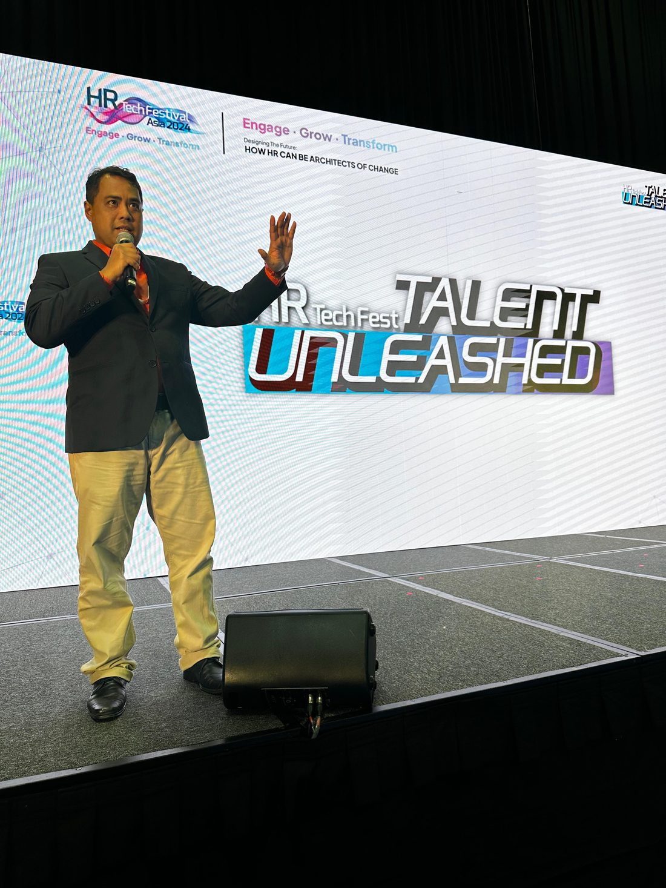
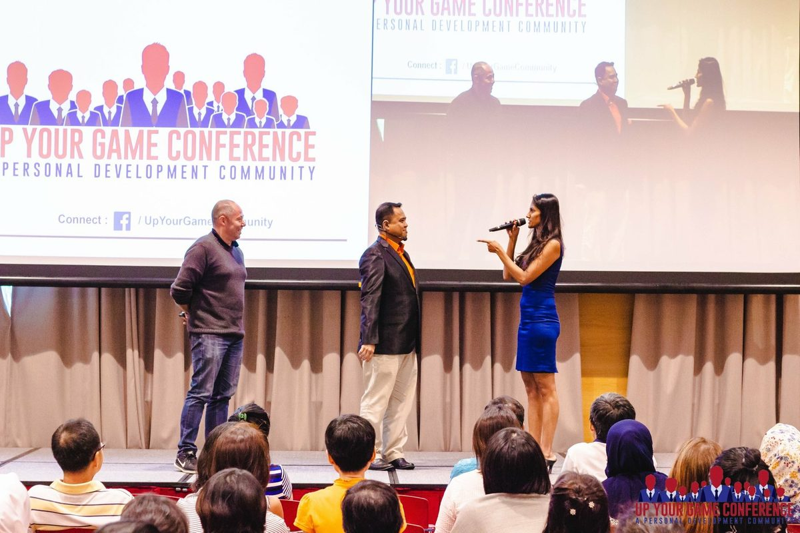

The speaker
The meeting was supposed to take 30 minutes. Then someone asked a question nobody expected. A colleague disagreed. A client pushed back. The plan changed. Hazriq's keynotes prepare leaders and teams for exactly that, through storytelling, theatre improv and audience interaction.
Invite Hazriq to speak
Creative Response Ability
The ability to respond effectively when the situation is unscripted. When the obvious answer doesn't work. When the conversation changes direction. When someone sees things differently. When the team has to figure it out together.
How to think, respond and lead effectively when situations become unpredictable.
Communicating confidently when you don't have a prepared script or a perfect answer.
How theatre improvisation trains the quick thinking professionals need in today's workplace.
Practical lessons from acting and theatre to become more confident and effective when speaking.
Delivered as conference keynotes and Lunch & Learn sessions. Workshops run through The Speaking Factory, the training firm Hazriq founded in 2011.

The audience is part of the experience.
Ideas become tools and behaviours people take back to work.
Improv creates room to experiment, connect and laugh at ourselves.
Exercises connect directly to real workplace situations.
People develop skills by doing, with 70–80% of the time hands-on.
A practical way to reframe situations and find new responses.
The actor's toolkit: presence, listening, adaptability, quick thinking.
“Hazriq had a wonderful presence as a speaker who easily engaged the audience with his 'Language of Creativity' message. His timing was spot on with this TEDx style presentation, which helped me as MC keep our event on track.”
“He made us curious about how we can incorporate creativity in a rigid work sector… surprised at how easy it is to apply creativity in our work.”
“Hazriq's class was really fun and engaging, and full of practical tips! The full day workshop was well-paced and had hands-on practice for application which was extremely useful.”